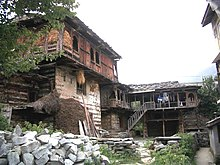

Himachal Pradesh was one of the few states that had remained largely untouched by external customs, largely due to its difficult terrain. With remarkable economic and social advancements, the state has changed rapidly. Himachal Pradesh is a multilingual state like other Indian states. Western Pahari languages also known as Himachali languages are widely spoken in the state. Some of the most commonly spoken individual languages are Kangri, Mandeali, Kulvi, Chambeali, Bharmauri and Kinnauri
The main caste groups in Himachal Pradesh are Rajputs, Brahmins, Kanets, Kulindas, Girths, Raos, Rathis, Thakurs, Kolis, Holis, Chamars, Darains, Rehars, Chanals, Lohars, Baris, Dagis, Dhakhis, Turis, Batwals.
Himachal is well known for its handicrafts. The carpets, leather works, Kullu shawls, Kangra paintings, Chamba Rumals, stoles, embroidered grass footwear (Pullan chappal), silver jewellery, metal ware, knitted woolen socks, Pattoo, basketry of cane and bamboo (Wicker and Rattan) and woodwork are among the notable ones. Of late, the demand for these handicrafts has increased within and outside the country.
Himachali caps of various colour bands are also well-known local art work, and are often treated as a symbol of the Himachali identity. The colour of the Himachali caps has been an indicator of political loyalties in the hill state for a long period of time with Congress party leaders like Virbhadra Singh donning caps with green band and the rival BJP leader Prem Kumar Dhumal wearing a cap with maroon band. The former has served six terms as the Chief Minister of the state while the latter is a two-time Chief Minister. Local music and dance also reflect the cultural identity of the state. Through their dance and music, the Himachali people entreat their gods during local festivals and other special occasions.
Apart from national fairs and festivals, there are regional fairs and festivals, including the temple fairs in nearly every region that are of great significance to Himachal Pradesh. The Kullu Dussehra festival is nationally known. The day-to-day cuisine of Himachalis is similar to the rest of northern India with Punjabi and Tibetan influences. Lentils (Dāl), rice (chāwal or bhāț), vegetables (sabzī) and chapati (wheat flatbread) form the staple food of the local population. Non-vegetarian food is more widely accepted in Himachal Pradesh than elsewhere in India, partly due to the scarcity of fresh vegetables on the hilly terrain of the state.
Siddu.Babru.Khatta.Mhanee.Channa Madra.Patrode.Mah Ki Dal.Chamba-Style Fried Fish.Kullu Trout.Chha Gosht.Pahadi Chicken.Sepu Badi.Auriya Kaddu.Aloo palda.Pateer.Makki di roti (Makki ki roti).Sarson ka saag.Chamba Chukh (Chouck).Bhagjery.Chutney of Til